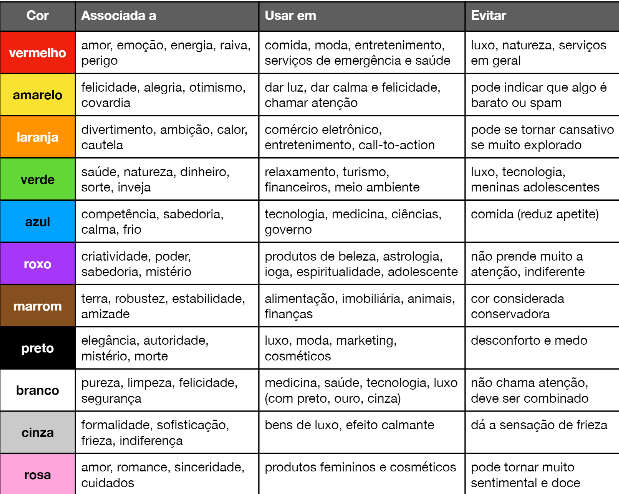
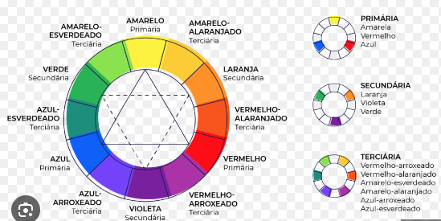
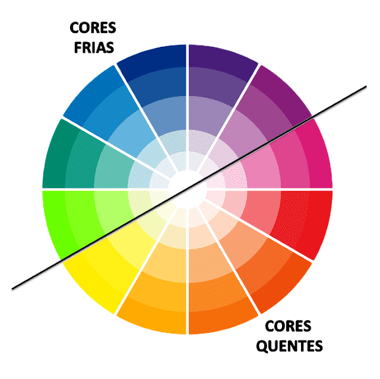
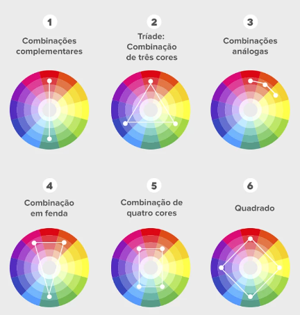

Estilo adicionado dentro do próprio HTML5 (não é recomendado a utilização pois essa é uma forma manual de estilização e deixa o HTML muito poluído, somente recomendado em casos isolados.)
Estilo interno ou CSS local
Nesse estilo é usado a tag style dentro do cabeçalho, o estilo interno é dividio em partes (body, h1, mark...), basta adicionar a tag + {} e adicionar os estilos modificados lá dentro
Estilo externo
Criar folha de estilo separado, seguindo as regras do CSS. No ínicio do arquivo tudo que começar com @ simboliza uma regra.
Basta ir no cabeçalho e adicionar o link:css, em seguida passe o mouse em cima do link e clique em control + clicar. OBS: é possível adicionar mais de uma página de CSS
Cores
Psicologia das cores

Temperatura e harmônia



Paleta de cores
Para criar paletas de cores é possível usar o adobe color.É possível identificar cores de uma imagem atráves do modo extrair temas; no modo explorar do adobe color é possível explorar as possibilidades de paletas criadas
Outra ferramento disponível é o paletton nele é possível visualizar um exemplo de como ficaria o site na paleta escolhida
Existe também o coolors que gera uma paleta de cores, nele é possível "trancar" uma cor caso goste dela, e ir modificando o restante.
Inserindo cores nas CSS
representar pelo nome em inglês, exemplo: blue
representação em hexadecimais, exemplo: #0000ff, #ffffff. (hexadecimais: 1, 2, 3, 4, 5, 6, 7, 8, 9, A, B, C, D, E, F.)
representação atráves do RGB (porcentagem de red, green e blue)
representação a partir de hsl (hue= matiz, saturation= saturação e lightness= luminosidade), represendo por números, exemplo: 200, 50%, 40%
Degradê nas CSS
Para utilizar degradê se utiliza a tag background-image + linear- gradient; é necessário adicionar na descrição a direção e as cores; exemplo: to right, white, red (to right, to left, to top, to bottom)
Tipografia
Família das fontes
É usado a tag font-family para alterar a fonte do site, normalmente é utilizado como o visual studio recomenda, por exemplo: "Arial, Helvetica, sans-serif;" pois caso um dispositivo não suporte a primeira fonte existe a possibilidade de outras 2.
Para descobrir fontes familiares basta jogar no google "css web font combinations" ou w3schools.
É possível generalizar o tipo de fonte desejada, assim cada navegador irá abrir a fonte padrão aceita por ele, basta colocar "serif, sans-serif ou monospaces".
Tamanho das fontes
Existem dois tipos de medidas, as absolutas e as relativas.
absolutas: cm, mm, in (polegadas), px, pt (ponto), pc (paica).
relativas: em (medida relativa ao tamanho atual da fonte), ex (relativo a altura X de uma fonte), rem (igual ao em porém relativo a fonte configurada no body) vw (largura da viewport, que é referente ao tamanho da tela do dispositivo), vh (altura da viewport) e %.
Para configurar a font-sizy é recomendado utilizar somente px e em.
16px equivale a 1em, o em é o tamanho natural da fonte. O recomendado é utilizar a medida em, pois se adapta ao tamanho da tela
Peso, estilo e shorthand font
Peso é definido na largura da fonte, mais gorda ou magra.
Não é possível alterar o peso das fontes padrões, somente de fontes específicas. Nenhum navegador possui essa fonte por padrão, sendo assim necessário adicionar no style;
A tag font-weight só aceita as medidas de lighter, normal, bold, bolder ou número (100 a 900).
A tag "font-style: italic ou normal" é utilizado para deixar a fonte em italico ou normal.
A tag "text-decoration: underline;" é utilizada para sublinhar o texto.
As tags font-family,font-weight, font-sizy e font-style são bastante utilizadas, e para simplificar é utilizado a propriedade shorthand. Existe uma ordem dentro da tag shorthand que é definido em font-style, font-weigth, font-sizy e por último a font-family.
Essa propridade shorthand das fontes e definido na tag font, seguido das propriedades escolhidas para cada estilo, exemplo: font: italic bold 1em 'work sans' , sans-serif;
Google fontes
Basta pesquisar por fonts google ou fonts google, após escolher a fonte e o estilo da fonte desejada basta clicar em select e copiar e colar o código HTML atráves do @import
É possível adicionar várias familias dentro de um @import, basta ir adicionando as opções desejas para o tipo de fonte.
Fontes externas
Existem vários sites para baixar fontes, por exemplo o dafont;
Quando for baixar uma fonte é importante prestar atenção se possui acentuação. Após baixar a fonte é necessário fazer a extração do arquivo.
Para adicionar ao site é preciso adicionar um seletor font-face e adicionar na url o nome exato do arquivo. Após a url é necessário adicionar o formato do arquivo, que pode ser opentype (otf) ou truetype (ttf) , exemplo:
Formatos de arquivos: opentype (otf), truetype (ttf), embedded-opentype, truetype-aat (apple advanced typography ou svg)
Assim como a fonte, o tipo de formato pode ser adicionado em várias linguagens para que todos os dispositivos suportem a fonte.
Caputurar fontes de um site
Um exemplo de extensão do google é o fonts ninja, basta adicionar no google que o fonts ninja começa a analizar quais fontes foram utilizadas no site. Se passar o mouse em cima da fonte irá aparecer as informações relacionadas ao tamanho, peso, formato...
Alinhamento de texto
Para fazer o alinhamento em css se utiliza a tag text-align, é possível utilizar 4 variações: center, left (esquerda), rigth (direita) ou justify (esquerda e direita)
Para efeutar o espaçamento do paragráfo é utilizado a tag text-indent, normalmente utilizado em px ou em.